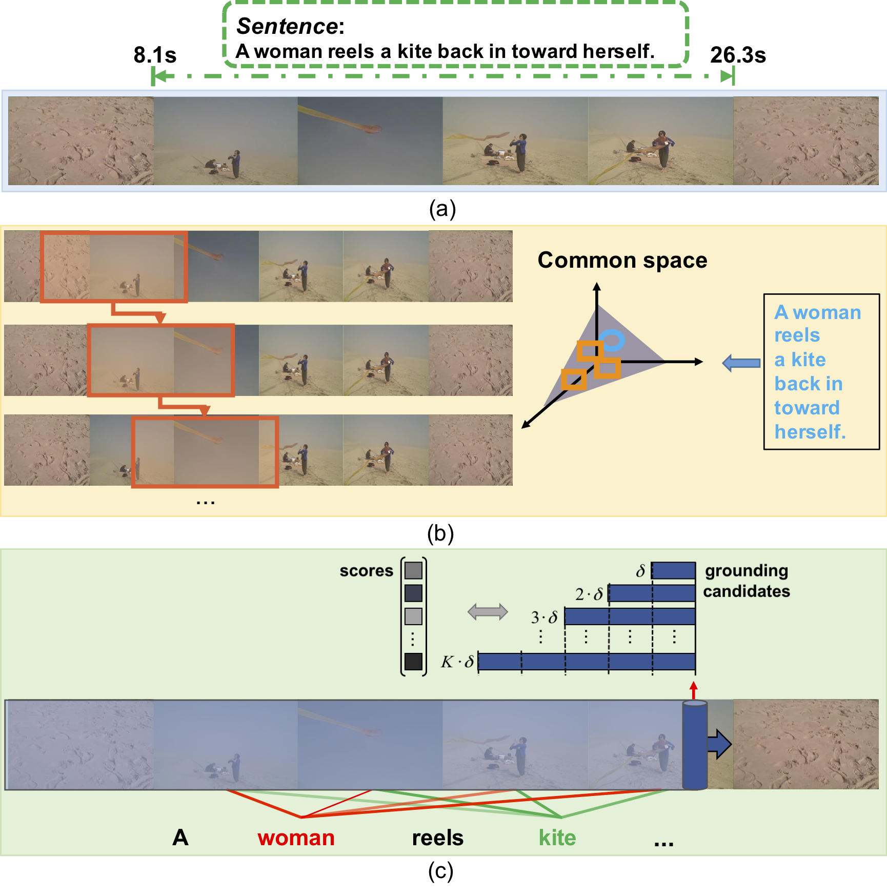
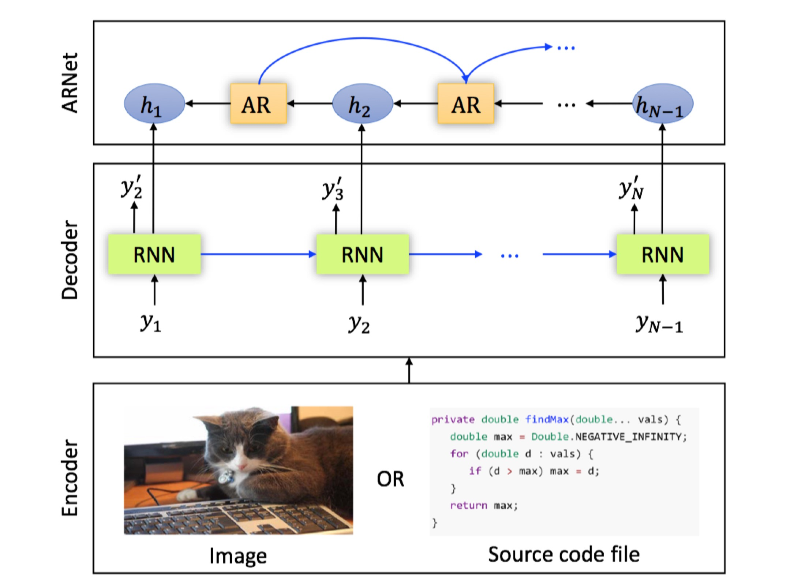
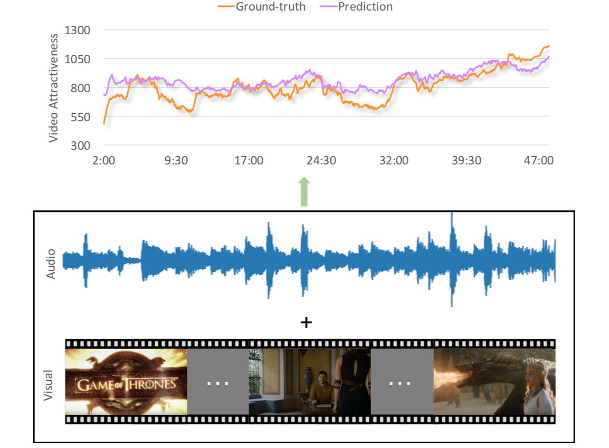

Xin-Peng Chen (陈新鹏)
Research Interests
My research interests lie in the area of deep learning and multimodal learning, specifically for image and language. Currently, I mainly focus on referring expression comprehension.
Work Experience
Nov. 2016 - Feb. 2017, Research intern, NLP Group,
Hitachi Central Research Laboratory, Tokyo
Mentor:
Dr. Bin Tong
Topic: Video captioning; Image paragraph description; Reinforcement learning for image captioning.
Mar. 2017 - The Present, Research intern, CV Group,
Tencent AI Lab, Shenzhen
Mentor:
Dr. Lin Ma,
Dr. Wenhao Jiang, and
Dr. Wei Liu
Topic: Image and video captioning; Large video classification; Referring expression comprehension.
Publications
|
 |
Temporally Grounding Natural Sentence in Video.
Jingyuan Chen, Xinpeng Chen, Lin Ma, Zequn Jie, Tat-Seng Chua
Conference on Empirical Methods in Natural Language Processing (EMNLP), Brussels, Belgium, 2018.
|
|
 |
Regularizing RNNs for Caption Generation by Reconstructing The Past with The Present.
Xinpeng Chen, Lin Ma, Wenhao Jiang, Jian Yao, Wei Liu
IEEE Conference on Computer Vision and Pattern Recognition (CVPR), Salt Lake City, USA, 2018.
Source Code, Poster, Video, Supplementary File
|
|
 |
Fine-grained Video Attractiveness Prediction Using Multimodal Deep Learning on a Large Real-World Dataset.
Xinpeng Chen, Jingyuan Chen, Lin Ma, Jian Yao, Wei Liu, Jiebo Luo, Tong Zhang
The Web Conference (original WWW), The Big Web Track, Lyon, France, 2018.
Project Page
|
Miscellaneous
- Tensorflow implement of paper: A Hierarchical Approach for Generating Descriptive Image Paragraphs. [link]
- Tensorflow implement of paper: Sequence to Sequence - Video to Text. [link]
- Tensorflow implement of paper: Optimization of image description metrics using policy gradient methods. [link]
- Detecting the text in natural images by SSD (Single Shot Detection). [link]
Last Updated on 9th Seq, 2018
Published with GitHub Pages